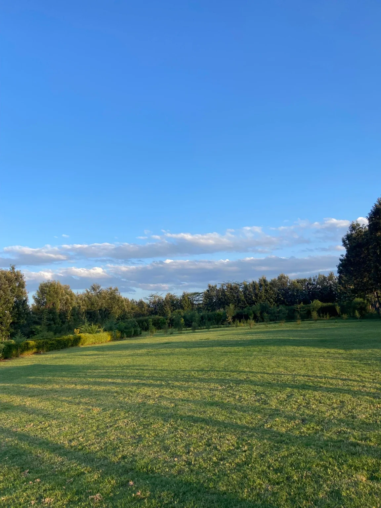

Your camping setup
Tell us whether you have your own tents. Ask about tent arrangements, bedding and the designated camping area.
Plan a camping stayCAMPING AT JOY RIPPLES
Bring your camping plans to Joy Ripples. A night away, a group retreat or time outdoors: start by talking through the details with our team.
Plan your visit
MAKE ROOM FOR THE OUTDOORS
Share your dates and group size. Confirm equipment, facilities and the complete quote before travelling.
Tell us whether you have your own tents. Ask about tent arrangements, bedding and the designated camping area.
Plan a camping stayDiscuss meals and drinks alongside your camping enquiry. Tell the team about dietary needs.
Explore dining optionsCombine your visit with a team building enquiry. Share the goals and timing for your group.
Plan a team dayPACK WITH A PLAN
Suggested personal essentials: suitable outdoor clothing, comfortable shoes, a torch, drinking water and your personal medication.
GOOD TO KNOW
Please confirm directly with the resort. Tent hire, bedding and equipment inclusions have not been published.
Ask the resort about current rules and permission before making fire arrangements.
Yes, you can enquire about both. The team will discuss dates, group requirements, activities and the quotation with you.